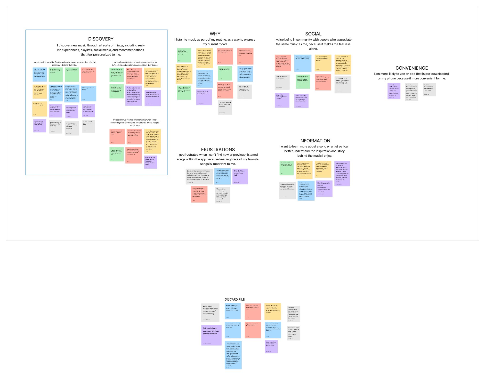
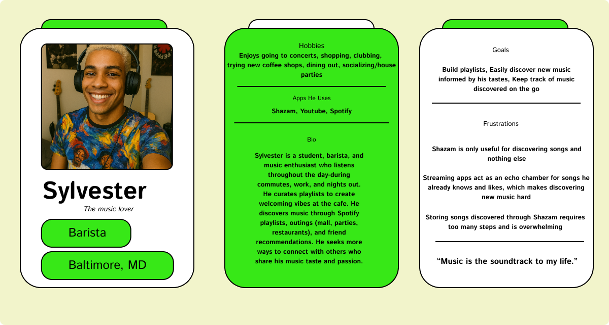
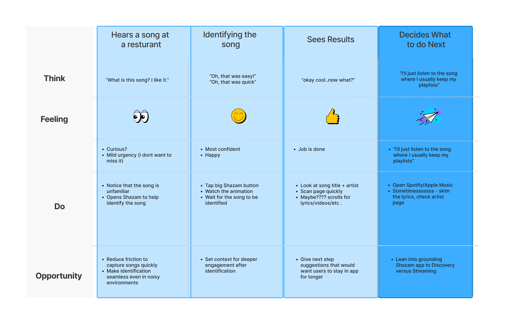
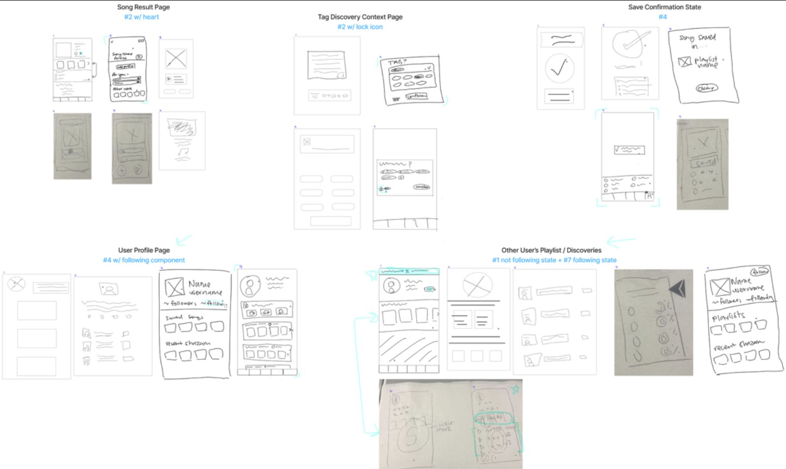

From Recognition to Discovery
Shazam has mastered one thing: identifying music in seconds. But the experience surrounding that moment—saving songs, browsing past Shazams, and discovering new music—has room to grow.
"This redesign is driven by this simple but powerful question: How do we allow users to identify songs AND discover quality music?"
Through research and usability testing, we found users often hit a dead end after identifying a track, unsure where to go next or how to explore related music. This redesign focuses on strengthening the Identify → Save → Explore journey.
Because music discovery isn't just about finding new songs, it's about feeling understood. When the experience becomes predictable and repetitive, users lose the sense of connection that makes music meaningful.
The "Identify and Bounce" Pattern
People turn to Shazam in moments of curiosity. A song plays, they tap the button, and in seconds, they have an answer. It's a magical moment of recognition. But for many users, the experience ends just as quickly as it begins.
Shazam is a doorway, not a destination
After identifying a track, users are pushed into other apps like Spotify or Apple Music to actually listen, save, or explore. Shazam becomes a doorway, not a destination.
Digital discovery feels shallow
Most digital music discovery happens alone—without conversation, context, or connection. It often feels shallow, repetitive, and limited to what users already know.
Shazam finds fade away
Over time, Shazam finds fade into the background. Songs are forgotten. Curiosity is lost. And users have little reason to return, even though Shazam is the very place where their discovery journey begins.
This redesign asks a simple but powerful question: What if Shazam didn't just identify music—what if it helped people truly discover it?
Understanding How People Discover Music
We began with a simple assumption: Shazam's biggest challenge was helping users move smoothly from identifying a song to exploring it.
But early research revealed something deeper: the issue wasn't continuity, it was rigidity.
The Echo Chamber Problem
After a song was identified, Shazam's recommendations kept users circling the same familiar sounds, reinforcing an echo chamber they were already tired of. Discovery felt predictable, repetitive, and disconnected from the emotional spark that made them Shazam the song in the first place.
Users weren't just looking for more music.
They were looking for context, connection, and meaning.
- Understand why a song resonated
- Learn where it came from
- Connect to artists, moments, and other listeners
Our challenge became clear: Shazam didn't need to speed up identification, it needed to open up discovery.
Research Goals
- Understand how users discover music
- Observe what happens after a song is identified
- Identify friction points in saving, exploring, and returning to Shazam
Methods
User Interviews
In-depth conversations with Shazam users
Usability Testing
Observed real-world Shazam usage patterns
Affinity Mapping
Synthesized insights into themes

Competitive Analysis
Direct & indirect competitors
Competitive analysis preview
Add competitive-analysis.png to see preview
What Competitors Taught Us
We analyzed how leading platforms approach discovery to understand what users expect from music apps beyond Shazam.
Spotify
Personalized, expansive discovery
Reveals: Users expect recommendations that broaden their taste, not repeat it.
SoundCloud
Social + contextual discovery
Reveals: Users want to see how others interact with music—comments, reposts, culture.
TikTok
Emotion-driven, moment-driven discovery
Reveals: Discovery is powered by people, stories, and trends—not algorithms alone.
YouTube
Deep rabbit holes and long-form exploration
Reveals: Users want pathways that lead somewhere, not dead ends.
Community-curated recommendations
Reveals: People trust other listeners more than automated suggestions.
Shazam
Fast, accurate identification
Reveals: The experience excels at the spark—but fails to support what comes after.
Key Insights
Four critical patterns emerged from our research that shaped our design direction.
Discovery is contextual everywhere except Shazam
Most platforms tie music to stories, creators, moods, or cultural moments.
Why it matters: Without context, Shazam's discovery feels flat and disconnected from the spark that made users Shazam the song in the first place.
Competitors expand taste; Shazam reinforces sameness
Spotify, TikTok, and SoundCloud expose users to new genres, artists, and trends.
Why it matters: Shazam's recommendations loop users back into familiar territory, creating a rigid echo chamber instead of an expansive discovery path.
Social signals drive discovery, but Shazam is silent
Comments, reposts, trends, and community cues make discovery feel alive on other platforms.
Why it matters: Shazam offers no social layer, leaving users without the human connection that makes discovery meaningful.
Other apps help users organize and return; Shazam leaves them lost
Competitors offer playlists, likes, history, and mood-based grouping.
Why it matters: Shazam auto-saves tracks, but users often don't know where they go—making it hard to revisit or build on their discoveries.
User Testing Observations
✓ Identification is flawless
Users tapped the Shazam button instantly with no confusion. The listening animation was clear and intuitive.
✗ But then they leave
Once the song appeared, users immediately left the app. Most jumped to Spotify/Apple Music to save, playlist, or explore.
✗ Discovery features are hidden
Many didn't know Auto-Shazam existed. Users described discovery as "shallow, repetitive, or lonely."
✗ Need for human connection, not algorithms
Saving songs required too many steps. Streaming apps created echo chambers with algorithm-driven playlists. Users craved authentic connection and context in discovery—not just what an algorithm thinks they'll like.
"I want to discover music through people, not just algorithms telling me what I should listen to."
These patterns reframed our understanding of Shazam's challenge. It wasn't about speed or accuracy—it was about continuity, connection, and discovery. Users weren't struggling to identify songs; they were struggling to do anything meaningful afterward.
Meet Sylvester
We created Sylvester so that we could remain user-focused and remember these pain points as we moved into ideation. His habits, frustrations, and goals embodied the gaps we saw across our research.

Click to view full size
From Insights to Opportunities
How might we bridge the gap between users' current experience and their desired experience?
User Journey Map
Click to view the progressive journey stages. Use arrows to navigate through each step.

From Insights to Possibilities
With a clear understanding of our users and the gaps in their experience, we shifted into ideation. Guided by Sylvester's needs and our research insights, we explored multiple directions for transforming Shazam into a dynamic launchpad for discovery.
We began sketching
We began exploring ways to extend the moment of song identification into a broader discovery journey—focusing on contextual tagging, social connections, and personalized playlists.
Early Concept Sketches
Click to view larger. Exploring save confirmations, tagging, user profiles, and social discovery.

The Breakthrough Moment
"What if we reframed the 'identified song' screen as a launchpad rather than a dead end?"
Instead of simply showing the track name, we imagined it as a gateway to deeper discovery: related songs, artist credits, user-generated playlists, and people who Shazamed the same track. This shift unlocked the core direction of our redesign—transforming a single moment into a continuous journey.
Rapid Iteration Through Lo-Fi Testing
We translated research insights into rapid lo-fi prototypes, tested them with five participants, and iterated three times. The goal: keep Shazam's instant identification magic while extending the moment into a continuous discovery experience.
Shazam Design Principles We Preserved
Single, focused action
The home screen remains a single, central Shazam button so users can identify music instantly.
Generous spacing
Lots of breathing room and clear visual hierarchy to reduce cognitive load and make the listening moment feel calm and intentional.
One or two actions per screen
Each page supports at most two primary tasks at a time, which prevents decision fatigue and preserves the app's quick-use DNA.
Key Design Changes from Testing
We conducted 3 rounds of usability testing with 5 participants. Here's what we learned and how we iterated. Hover over cards to see wireframe progression.
Home & Tagging
Round 1 Discovery
Problem: Generic tags like "mall" felt meaningless. Users couldn't remember discovery context.
"Don't see the point of tagging without specific location. Which coffee shop? Where?"
Solution: Replaced with specific contextual tags (e.g., "LAX Airport," "The Corner Store") to create memory cues tied to the discovery moment
✓ Result: Users found tags meaningful when tied to specific places
Song Result Page
Round 1-2 Discovery
Problem: 3/5 users said initial layout felt too dense. Users got stuck on what to do next.
"Took a couple of minutes to figure out what to do next. User scrolled through the page and then finally clicked the heart button."
Solution: Increased whitespace, limited items shown at once, moved "Fans of This Song" higher to encourage social exploration
✓ Result: Round 3 users completed save action without hesitation


Save Behavior
Round 1 Discovery
Problem: Plus icon wasn't intuitive as save action
"Where to save song…like? [pauses] Was able to find it after saying that to realize"
Solution: Replaced with heart icon (universal "like/save"), added top-bar notification to confirm saves, maintained discovery flow
✓ Result: "Finding the song was simple. Easy to follow someone and save music"
Page Continuity
Round 1-2 Critical Issue
Problem: Redirecting after save broke momentum. Users expected to stay on song result page.
"Once added song to profile, it brought her to a different page...We stayed here, we didn't go somewhere new, but it changed. Doesn't feel right."
Solution: Maintained song result page as persistent discovery surface with lightweight inline confirmation instead of full page redirect
✓ Result: Users stayed in discovery flow and explored fans/related content after saving
Visual Hierarchy
Round 2 Spacing Issues
Problem: Inconsistent spacing throughout app. Footer icons too large, pulling attention from primary content.
"The Icons in the footer are too big, pulling on the user's attention when this nav bar is a secondary function."
Solution: Refined spacing between sections, reduced footer icon size, ensured consistent alignment across all pages
✓ Result: "Users liked the simplicity of the typography making the app scannable and easy to read"
Privacy & Context
Round 1 Confusion
Problem: Users didn't understand why profiles were limited or what privacy settings meant
"What's the lock for? Why would they need to protect the privacy of generic tags?"
Solution: Added clear privacy indicators, public/private toggle during tagging, explained limited profiles with "Follow to see full profile"
✓ Result: Users understood privacy controls and profile limitations
What We Learned Across 3 Rounds
- Specificity matters: Users remembered "The Corner Store" but not "restaurant"
- Stay on the page: Redirects after saving broke discovery momentum
- Visual clarity wins: Heart icon universally understood vs. plus icon confusion
- Space creates focus: Generous whitespace made the app "scannable and easy to read"
- Privacy needs clarity: Users wanted control but needed explanation of what was protected
Learning from Best-in-Class Experiences
We analyzed patterns from Depop, Spotify, TikTok, and Instagram to inform our social discovery and interaction design.
Depop
Adapted: "Find users" flow and likes page—discoveries tied to people, not just content
Spotify
Adapted: Blend/taste overlap indicator to surface shared taste and increase follow behavior
TikTok
Adapted: Quick favorites and short preview playback—low-effort engagement in a fast discovery loop
Adapted: Compact profile header that emphasizes media over metrics
Why these borrowings work: They extend, not replace, the core experience. Everything is additive and optional. They increase return value without clutter, make discovery social and memorable, and respect attention with short interactions.
Validating the Post-Identification Flow
Method: Moderated usability testing (remote via Zoom) using low-fidelity Figma prototype
Participants: 5 people familiar with Shazam or similar music apps
Test Scenario
While at The Corner Store, participants hear a nostalgic song. They use Shazam to identify it ("Dancing in the Moonlight" by Toploader), then save the song, tag where they discovered it, and follow another user who also saved the song.
High Impact Findings
Activation is obvious, but next steps are not
All participants could press the Shazam button, but several hesitated on the Song Result page
Density causes overwhelm
3/5 participants described the initial result layout as "too dense"
Tag specificity matters
Generic tags (e.g., "mall") felt meaningless; specific place names created stronger memory cues
Save affordance is intuitive when it's a heart
Participants expected a heart to mean save—replacing the plus icon reduced confusion
"I tapped Shazam, but then I wasn't sure what to do next."
"Which coffee shop? Be specific—that makes it more meaningful."
Usability Testing Session Screenshots
(Add testing screenshots or participant quotes)
What We Delivered
Continuous Experience
Flows from identification → tagging → saving → exploring → connecting
Modular Design System
Reusable components with clear hierarchy, ready for implementation
Social Discovery Layer
Lightweight, optional, and emotionally resonant—not overwhelming
"It respects Shazam's core value—speed, clarity, minimalism—while adding emotional depth and return value without clutter."
Why it matters: It gives users a reason to come back—not just to identify, but to explore, remember, and connect. It proves that even a single-tap app can support richer, more personal experiences when grounded in real user needs.
Final Hi-Fi Mockups
(Add final design screens)
Experience the Redesign
Try the interactive prototype below to experience the complete user flow from song identification to social discovery.
👉 Try the Flow:
- Tap the Shazam button in the center to identify "Dancing in the Moonlight"
- Click the heart icon (top right) to save the song to your profile
- Tag your discovery - Click "NEXT" then select a location from the dropdown
- Explore social connections - Click on a fan's profile to see shared music taste
- Browse discovery features - Navigate to Profile and Discover tabs in the bottom nav
What I Learned
Context is everything
Generic tags failed; specific place names created emotional memory cues that made discoveries meaningful.
Continuity over completion
Users wanted the discovery flow to continue, not redirect them away after identifying a song.
Social discovery needs clarity
Privacy controls and limited profile views required explicit communication to avoid confusion.
Additive, not disruptive
The best features extended Shazam's core magic without replacing it—everything was optional and additive.
Test early, test often
Three lo-fi iterations caught critical usability issues before hi-fi investment, saving time and improving quality.
Emotion drives retention
Turning ambient moments into memorable ones through contextual tagging created lasting emotional connections to discoveries.
Keep the Conversation Going
This project taught us how to turn a fleeting moment—hearing a song in a corner store—into a meaningful experience of memory, connection, and discovery. We designed, tested, and refined every detail with intention, and we grew as designers and collaborators in the process.
If you're building products that center emotion, context, and human connection—or if you simply want to chat about music, UX, or storytelling—I'd love to connect.